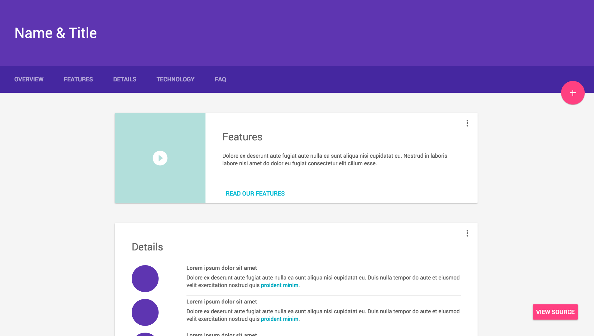
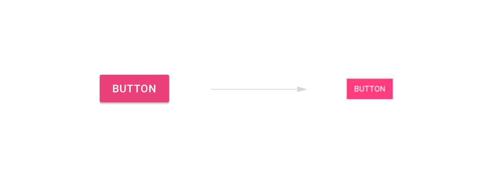
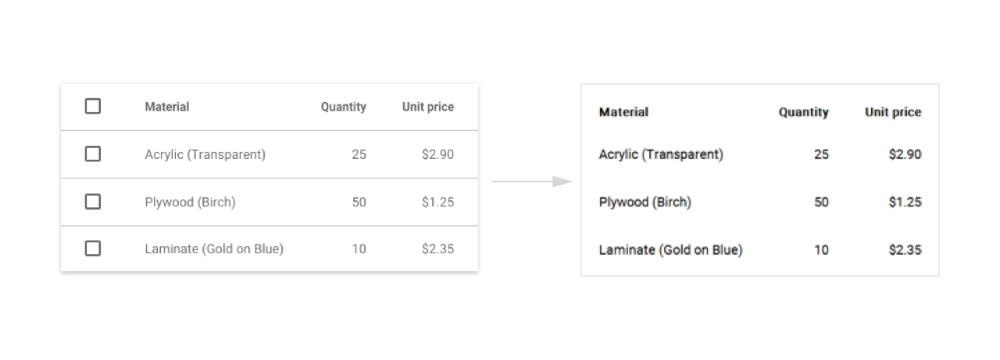
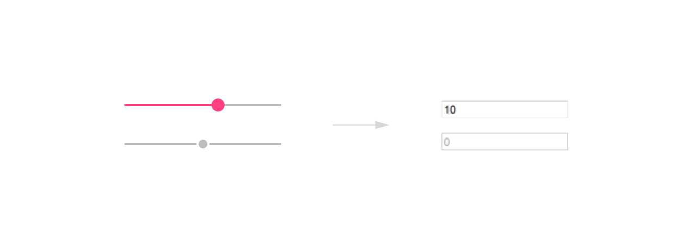
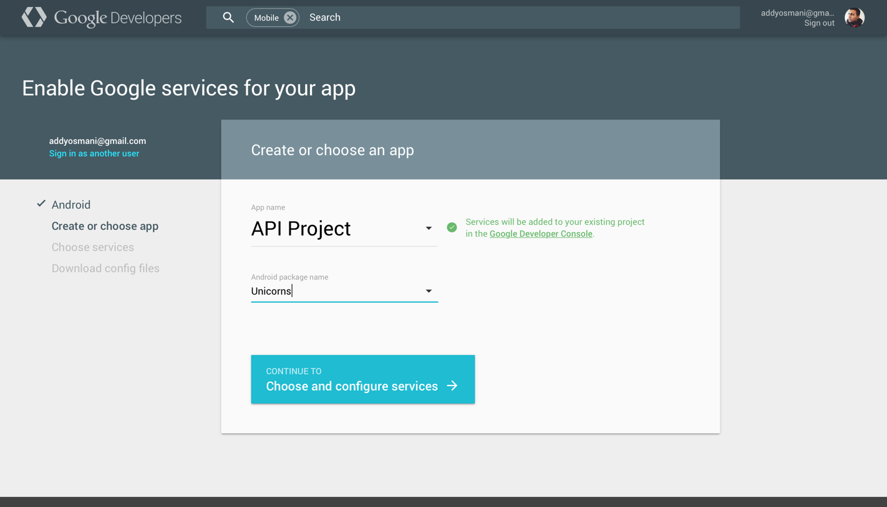
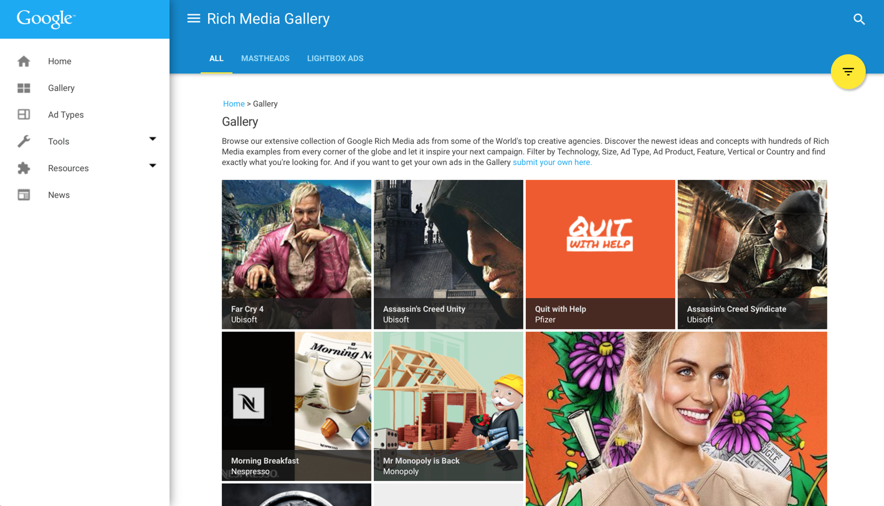
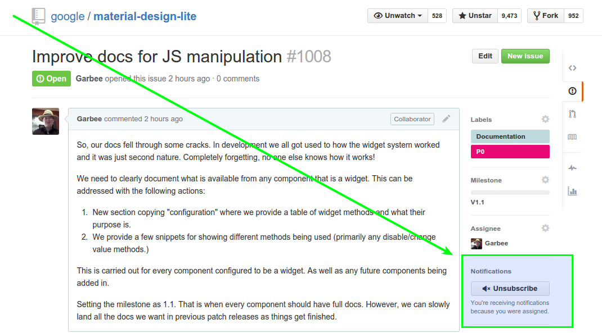

目录
我应该在哪种场景使用MDL？
如果你有兴趣使用流行的WEB技术如CSS、Javascript、HTML 来体验Material Design， MDL是一个可以考虑的有益选择。我们为重内容网站优化，如营销页面，文章，博客以及并非严重应用化的普通web内容，如果你想通过简单选择一些颜色，自定义一些模板就能体验到Material ， 我们尽力帮助使该过程更简单。
虽然已经有了一些Material Design社区驱动选择，我们的经验表明，当Material规范涉及到网页时仍有一些差距。与其猜想这些差距该如何填补（我们知道社区一直在努力），我们选择了与Material Design团队紧密合作以提供一个Material 库，至今与规范的兼容性以及规范提供的指导方面仍在发展。
MDL使用了何种CSS命名规范？
MDL使用 BEM 写就，BEM代表块（Block），元素（Element），修饰符（Modifier）。它是用于构建CSS类的名称方法，以使它们具有一致性，分离性，和富有表现。一些关于深入学习BEM命名法的优秀资源：
这些都是很好的资源，简化理解BEM所需的知识。如果你想阅读发明者的理论，Yandex 提供了该资源，该资源中从CSS深入到在Javascript使用BEM。
我们的 wiki 包含一个章节来介绍MDL指定的命名空间。
MDL是否支持渐进增强？
MDL组件库是从渐进增强里面基础上设计而来的，我们尝试尽可能的使用原生HTML元素来构建，在绝对需要“增强的地方”依赖javascript.
这方面的一个例子就是我们的“纯文字”Material Design模板。从Chrome开发者工具中禁用掉Javascript后，这个页面依然可以良好的渲染CSS：

这将允许我们优先渲染重要的内容然后再使用如Material Design墨水扩散按钮和弹出菜单组件来“增强”页面。
MDL在ie9中会降级到无-javascript的体验级别，当然你可以通过添加 polyfills 来增强体验。如果组件需要Javascript来运转，如布局组件，这时就需要进行规划开发了。完全支持IE10+ 以及更高级的浏览器。关于更详细的浏览器支持，请查看‘MDL支持哪些浏览器。
Note: MDL网站本身尝试尽可能的使用渐进增强，然而我们确实在网站的多个方面（如我们的组件页面）过重的依赖了JS。MDL的模板和组件有尝试在关闭JS时能够良好渲染。
MDL 支持哪些浏览器？
需要常见浏览器最新的两个版本才能获得完整的MDL体验，虽然我们在IE9这类浏览器中适度降低到仅依靠CSS，但他们仍没能通过 达到标准 测试.
我们的 浏览器兼容列表 有最新的浏览器支持信息。 关于组件，我们最少需要querySelector, classList and addEventListener, 这些也可以通过 polyfilled 来实现. 我们的组件在IE0+ 以上才能正常工作，主要是因为我们使用了Flexbox。
我们目前正在MDL网站使用的以提高支持过时IE的polyfills如下：
<!--[if IE]>
<script src="//cdnjs.cloudflare.com/ajax/libs/es5-shim/4.1.7/es5-shim.min.js"></script>
<script src="//cdnjs.cloudflare.com/ajax/libs/classlist/2014.01.31/classList.min.js"></script>
<script src="//cdnjs.cloudflare.com/ajax/libs/selectivizr/1.0.2/selectivizr-min.js"></script>
<![endif]-->
IE10标准模式已经 移除了对条件注释的支持, 所以以上代码只能被老款IE执行，如IE9。
We do not officially support IE8. That said, some components will degrade using the CSS-only (or native HTML element) experience there better than others. For example:
Buttons

Tables

Sliders (降级为输入框)

MDL与Ploymer能搭配良好使用吗？
MDL致力于为静态内容站点优化体验，如博客，营销页面和其他传统基于文本的web页面。
由 Polymer 创建的 Paper 元素是完全封装的组件，他们可以单独实用化或者组合在一起来创建MD风格网站，以及支持更高级的用户交互。
这就是说，MDL可以与Polymer元素并行一起使用，Polymer封装了用于这些组件的涉资到web组件，而MDL不影响这些自定义组件的设计。
MDL可以同twitter的Bootstrap来比较吗？
如果我们用它替代了bootstrap，我们能期望获得同级别组件的样式吗？
MDL 可以替换bootstrap部分功能，然而，它无意提供与bootstrap提供的每一种功能。相反MDL打算实现 Material Design 规范中指定的组件。这使得它能够提供目前最全面，最准确的解决方案。
他与其他的现存Material样式实现对比如何？
Materialize, Material Bootstrap, etc
我们认为社区做了伟大的工作，提供他们自己理解中的对Material Design的 CSS库实现。
这就是说，大规模，多样化的实现往往是基于对规范的宽松解释（不是他们的错！），并且他们的意见并不是总能反映Material Design 团队认为的‘正确’。MDL开发中通过与Material Design和Chrome UX团队密切协作，同时进行定期评价来确保符合规范标准。当我们遇到一个规范尚未完全充实的领域，MDL能够通过审查意见获得如何忠于Material Design的方式来解决。
我应该使用压缩版、CDN还是SASS版本的MDL？
我应该构建自己的版本还是下载压缩版还是仅仅通过使用CDN？
压缩版: 如果你是初次尝试MDL，我们推荐你从‘起步’页下载一份默认包，它包含压缩版的css/js和可选的我们的预制模板。
CDN: 如果你只是在原型中或者想避免自己管理MDL 文件，你可以通过我们的CDN来获取多重缓存版本。
定制版: 如果你要用MDL定制一套配色来创建一个新站点，我们推荐你先下载默认包然后通过定制工具生成一份个性化构建版本。依据需求使用它来覆盖原来的material.min.css。
Sass: 如果你要大干一场，你可以获取MDL的Sass版本，它包含我们的源代码，文档以及模板，这个版本允许你通过css变量来最大化自定义，以及你善长的Sass的其他功能。
官方的CDN使用了哪个服务商？
官方CDN托管在谷歌云存储上。
MDL与Web Starter Kit 有关系吗？
MDL是WSK风格指南的一个演化， 越多的使用 Web Starter Kit， 大多数开发者越能清晰他们站点想要的Material Design。
WSK风格指南并没有完全符合 Material Design ，它仅仅基于理念。从WSK项目，MDL诞生以尝试实现开发者的需要。在这个过程中作出的实施尽可能忠实于该规范。
谷歌的项目有在生产环境中使用MDL吗？
一些不同的谷歌特性在生产中使用了MDL，他们使用了较旧的，不完整的版本，但表现出的部署体验可以关注一下。实例包括：
The Google Services site:

RichMediaGallery by DoubleClick:

并在许多团队即将开展的项目中使用，包括谷歌购物。
有没有展示使用MDL网站的地方？
目前还是初期，但是我们的 wiki 包括了一些 在生产中使用MDL的网站 页面列表
如果要求加入你的站点，请在我们的github 问题追踪中添加一个new issue 。 这个issue应该包括一个链接，网站的说明和建议的屏幕截图。
我们希望近期添加适当展示到该网站。
我能构建或使用个人的MDL组件吗（如按钮等）？
对MDL的v1,我们专注于想要在他们网页中添加几个不同组件的人和将要包括大部分MDL库的人，这意味着支持和文档围绕那些使用了最小的单独组件的。
也就是说，如果你需要生成只是使用一个单一的（或更小的数目）组件的构建，你需要在我们的Sass构建中使用Gulp.
你可以在material-design-lite.scss中注释掉你不要的组件，在Gulpfile文件中注释掉你不需要的代码，然后通过运行gulp来创建你自己的构建。
也就是说，如果你需要生成只是使用一个单一的（或更小的数目）组件的构建，你需要在我们的Sass构建中使用Gulp。
你可以在material-design-lite.scss中 注释掉 你不要的组件，
在Gulpfile文件中 注释掉 你不需要的代码，然后通过运行 gulp 来创建你自己的构建。
我们已经讨论过提供更模块化的方式来提供组成部分，但它已经超出了V1的时间线。
我如何提交关于MDL的问题？
请在我们的 GitHub repo 中通知我们任何问题。
我在哪里可以获得关于使用MDL上的问题？
我们鼓励MDL使用者和开发者在社区中讨论问题，以及帮助解决问题，在 Stack Overflow 中请使用 Material-Design-Lite 标签。
有没有关于MDL的专题介绍或者幻灯片？
我们在google I/o 2015 大会上做了一个关于MDL的预览演讲，可以在 SpeakerDeck 中找到。
我能提出申请或者贡献组件到MDL吗？
当然！可能有你想要看到的一些组件或者模板实现我们还没有在MDL中提供。请在 Issue Tracker 中随时提出他们。虽然我们不能保证我们能够实现所有这些，但我们会定期查看并考虑这些请求。
MDL 支持非sass的预处理语言吗？
Stylus, Less, PostCSS, etc.
MDL使用Sass实现而且目前没有计划改变它，如果你想要用另一种语言来实现，欢迎尝试。
我怎样能让我感兴趣的问题保持更新？
关注整个仓库可能会在你的信息流中引入大量的噪音，要保证只收到你感兴趣的问题的更新，你只需要订阅该问题。这需要在问题页面点击右侧边栏的订阅按钮。
